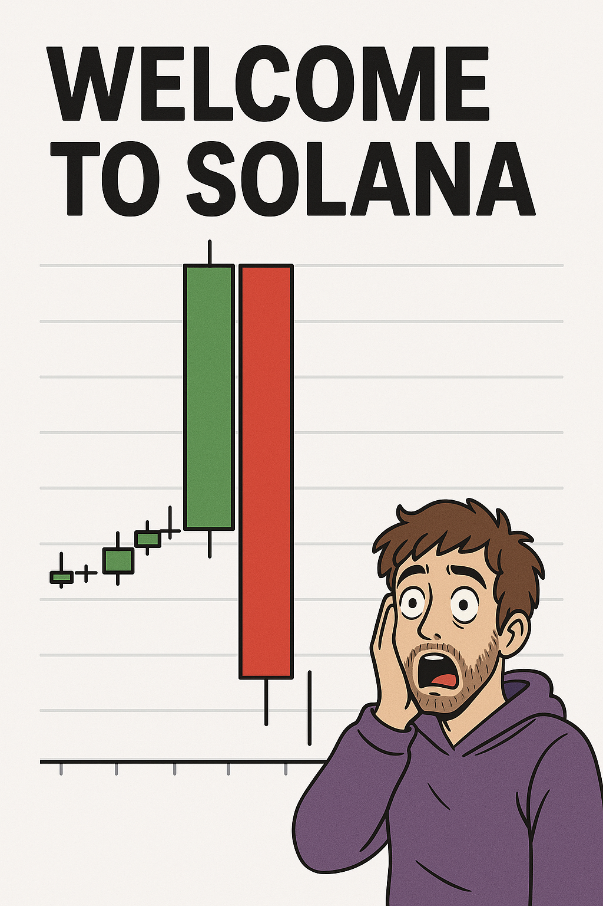
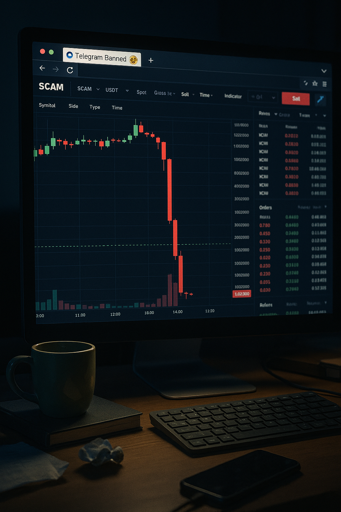
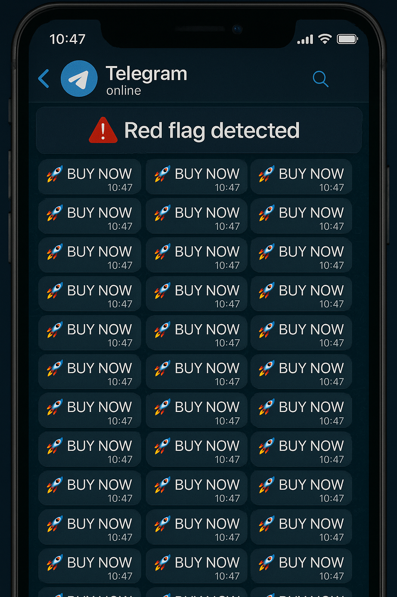
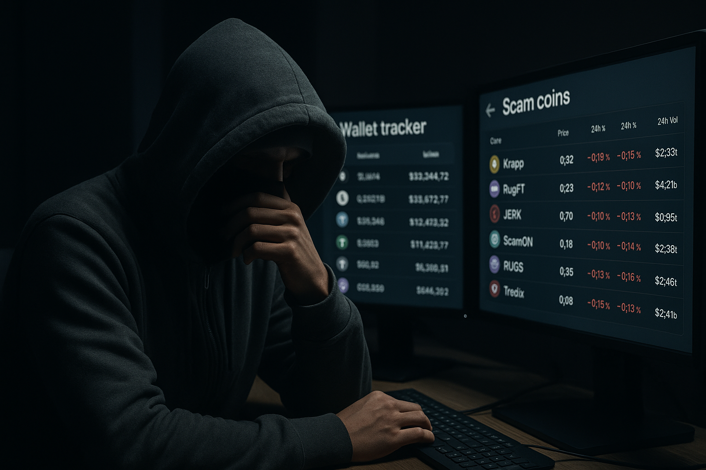
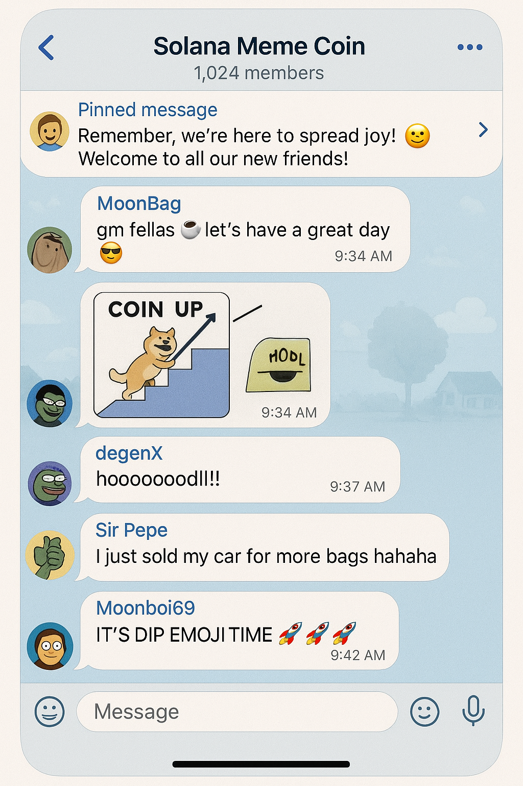
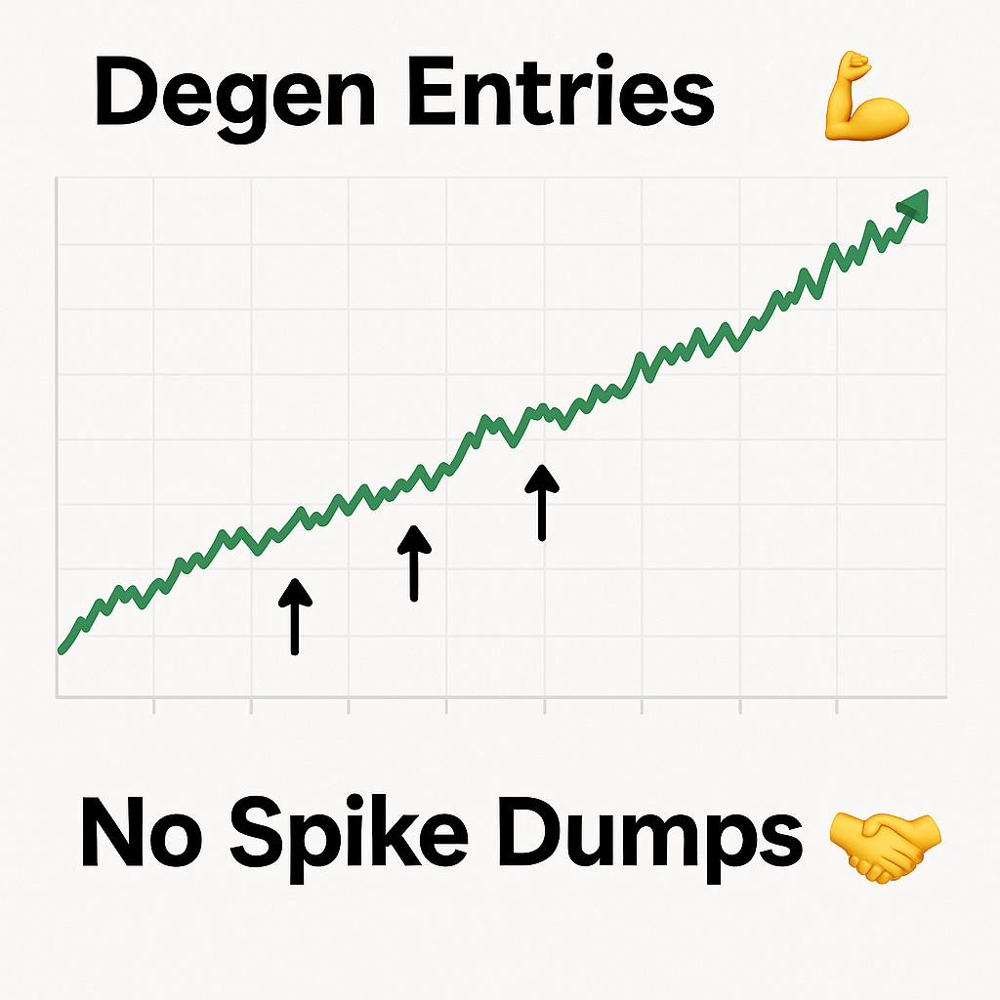

Solana Sh*tcoins 101: What Makes One Moon vs Rug?
A degen-style guide to filtering real community projects from pump-and-dumps.
💭 Why This Exists
Let’s be real — the Solana meme coin scene is absolute chaos. One minute you're up 10x, the next you're stuck holding the bag with a dev who just vanished. This guide is for anyone who's tired of getting rugged and wants to spot real potential early.

🚩 Red Flags That Scream RUG
- Anonymous dev with no history or rep
- Telegram locked or filled with botted replies
- Chart has massive single-wallet control
- No website, or a cloned template site
- Zero updates, zero humor, zero soul



✅ Green Flags That Mean There’s a Real Community
- Organic meme content actually hitting Twitter
- Dev or founder shows face or consistent voice
- There’s a vibe. Inside jokes, lore, effort.
- Chart has steady entries, not wild spikes/dumps
- Small tools, trackers, or actual value added


💡 Bonus Tips from StillStuck
- Use Birdeye to check volume and holders
- Watch for reused liquidity wallet names (search them)
- Look for Twitter reply activity — real or farmed?
- Study who’s talking about it… real degens or influencers?
🧠 Want More?
Check out our free StillStuck.lol tools, memes, and survival PDFs. We’re building to help people learn faster and avoid the mistakes we made.
Stay safe out there. And remember — if it looks too good to be true… it probably is.